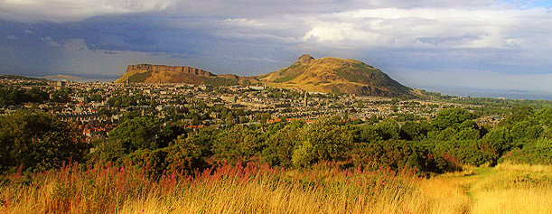

Wednesday - May 6, 2015
Venue: University of Edinburgh, Informatics Forum G.07 (directions)
09:15-09:35 |
Registration (ground floor of the Informatics Forum)Tea & Coffee with Sweet Danish |
|
09:35-09:40 |
Welcome |
|
| 09:40-10:15 | Arkadi Nemirovski (Georgia Institute of Technology, USA) | |
| Fenchel-type representations and large-scale problems with convex structure on difficult geometry domains | ||
| 10:15-10:50 | Rodolphe Jenatton (Amazon, Germany) | |
| Sparse and spurious: dictionary learning with noise and outliers | ||
10:50-11:20 |
Break (Tea & Coffee with Biscuits) |
|
| 11:20-11:55 | Peter Richtárik (Edinburgh, UK) | |
| Stochastic dual Newton ascent for empirical risk minimization (paper) | ||
| 11:55-12:45 | Spotlight Session 1 |
|
| 1. Jose Vidal Alcalá-Burgos (CIMAT, Mexico) | ||
| 2. Dominik Csiba (University of Edinburgh, UK) | ||
| 3. Kimon Fountoulakis (University of Edinburgh, UK) | ||
| 4. Gordon Inverarity (MetOffice, UK) | ||
| 5. Dimitris Kouzoupis (University of Freiburg, Germany) | ||
| 6. Wenting Long (Sun Yat-sen University, China) | ||
| 7. Aurelien Lucchi (ETH Zurich, Switzerland) | ||
12:45-14:15 |
LUNCH + POSTER SESSION 1 (Informatics Forum, Ground Floor) |
|
| 14:15-14:50 | Martin Jaggi (ETH Zurich, Switzerland) | |
| Frank-Wolfe optimization algorithms: a brief tutorial | ||
| 14:50-15:25 | Katya Scheinberg (Lehigh, USA) | |
| Unconstrained trust region based stochastic optimization with biased and unbiased noise | ||
15:25-15:55 |
Break (Tea and Coffee with Biscuits) |
|
| 15:55-16:30 | Robert Gower (Edinburgh, UK) | |
| Randomized iterative methods for linear systems and inverting matrices | ||
| 16:30-17:05 | Mark Schmidt (University of British Columbia, Canada) | |
| Is greedy coordinate descent a terrible algorithm? (paper) |
Thursday - May 7, 2015
Venue: University of Edinburgh, Informatics Forum G.07 (directions)
09:15-09:35 |
Registration (ground floor of the Informatics Forum)Tea & Coffee with Sweet Danish |
|
09:35-09:40 |
Welcome |
|
| 09:40-10:15 | Donald Goldfarb (Columbia University, USA) | |
| Low-rank matrix and tensor recovery: theory and algorithms | ||
| 10:15-10:50 | Zheng Qu (Edinburgh, UK) | |
| Randomized dual coordinate ascent with arbitrary sampling | ||
10:50-11:20 |
Break (Tea & Coffee with Biscuits) |
|
| 11:20-11:55 | Jonathan Eckstein (Rutgers, USA) | |
| Object-parallel solution of large-scale lasso problems | ||
| 11:55-12:45 | Spotlight Session 2 |
|
| 8. Rodrigo Mendoza Smith (University of Oxford, UK) | ||
| 9. Christian Mueller (Simons Center for Data Analysis, USA) | ||
| 10. Thomas Prescott (University of Oxford, UK) | ||
| 11. Daniel Robinson (Johns Hopkins University, USA) | ||
| 12. Chee-Wei Tan (City University of Hong Kong, Hong Kong) | ||
| 13. Simon Tett (University of Edinburgh, UK) | ||
| 14. Weiqi Zhou (Jacobs University, Germany) | ||
12:45-14:15 |
LUNCH + POSTER SESSION 2 (Informatics Forum, Ground Floor) |
|
| 14:15-14:50 | Patrick Louis Combettes (Paris 6, France) | |
| Splitting techniques in the face of huge problem sizes: block-coordinate and block-iterative approaches | ||
| 14:50-15:25 | Francois Glineur (Louvain, Belgium) | |
| Smooth strongly convex interpolation and exact worst-case performance of first-order methods | ||
15:25-15:55 |
Break (Tea and Coffee with Biscuits) |
|
| 15:55-16:30 | Jakub Konečný (Edinburgh, UK) | |
| Distributed optimization with arbitrary local solvers | ||
| 16:30-17:05 | Garud Iyengar (Columbia University, USA) | |
| A distributed proximal method for composite convex optimization |
Accepted Contributions (posters)
Jose Vidal Alcalá-Burgos (Universidad Autonoma de Yucatan, Mexico)
Affine invariant stochastic optimization
Dominik Csiba (University of Edinburgh, UK)
Stochastic dual coordinate ascent with adaptive probabilities
Kimon Fountoulakis (University of Edinburgh, UK)
A problem generator for big data optimization
Gordon Inverarity (Met Office, UK)
Data assimilation for weather forecasting
Maria Koroliuk (University of Warwick, UK)
Analysis of urban traffic data
Dimitris Kouzoupis (University of Freiburg, Germany)
First-order methods in nonlinear model predictive control
Wenting Long (Sun Yat-sen University, China)
Fixed point algorithm based on proximity and precondition operator for high resolution image reconstruction with displacement errors
Aurelien Lucchi (ETH Zurich, Switzerland)
Neighbourhood watch: variance reduction using nearest-neighbours
Rodrigo Mendoza Smith (University of Oxford, UK)
Expander L0 decoding
Christian Mueller (Simons Center for Data Analysis, USA)
Auto-tuned high-dimensional regression with the TREX: theoretical guarantees and non-convex global optimization
Thomas Prescott (University of Oxford, UK)
Layered synthetic biomolecular systems
Daniel Robinson (Johns Hopkins University, USA)
A hybrid ADMM algorithm
Chee-Wei Tan (City University of Hong Kong, Hong Kong)
A probabilistic approach to rumor source detection and graph-based message passing algorithms
Simon Tett (University of Edinburgh, UK)
Optimising parameter values in climate models: observational/model synthesis
Weiqi Zhou (Jacobs University, Germany)
Kaczmarz iteration with random row permutation
Friday, May 8, 2015
Morning: Light trek to Arthur's Seat
On Friday morning there is an optional walk / light trek to the top of Arthur's Seat—a 350 millions years old volcano in the city centre rising 251 meters above the sea level—offering magnificient views of Edinburgh and the Firth of Forth. We are departing at 9:30 sharp from the entrance of Informatics Forum, please plan to arrive 10 minutes earlier.

"The views from the summit [of Arthur's seat] are awesome. The city itself is a real gem, Edinburgh is in my own opinion the most beautiful and fascinating city in Britain by a mile. [www.TrekkingBritain.com]
While the walk is reasonably light, good footwear is recommended as there will be some ascending to do. It is recommended that you bring along a light weather-proof jacket; it can get windy up on the hill. Also, please bring enough water and light refreshments with you.
09:20-09:30 |
Meeting in front of the Informatics Forum |
|
| 09:30-12:30 | Light trek to the top of Arthur's Seat |
|
12:30-14:00 |
Lunch (individual) |
We are not going to walk straight to the Arthur's Seat. Instead, we will take a detour and first walk through the George Square campus towards the National Museum of Scotland (entrance free, great exhibits) and the Elephant house, the birthplace caffe of Harry Potter. Continuing along the 300m long George IV Bridge built in 1832, we enter the Royal Mile (a 1 mile long backbone of Edinburgh's historic centre joining the Edinburgh Castle and the Holyrood Abbey) near the High Court of Justiciary, Scotland's supreme criminal court. From that point we will walk along the Royal Mile, away from the Castle and towards the Holyrood Abbey, i.e., down the hill, passing many points of interest which you might want to visit if your are staying in Edinburgh a bit longer: St. Gile's Cathedral (Mother Church of Presbyterianism), Mary King's Close, North Bridge, Canongate Kirk, Scottish Parliament Building, Dynamic Earth Science Centre, Palace of Holyroodhouse and Queen's Gallery. Once at the end of the Royal Mile we enter the Holyrood Park, walking along a foot path (called Radical Road) below Salisbury Crags—a stretch of over 46 meters high cliffs of dolerite and columnal basalt offering spectacular views of the city centre. At the end of the path is the foot of Arthur's Seat; from there it is just a 20 min walk up to the summit point. We will return to the Royal Mile via a different route through the Holyrood Park, passing by the St. Margaret's Loch and the ruins of St Anthony's Chapel.
Afternoon: Colloquium
Venue: Lecture Theatre C, 3rd floor of James Clerk Maxwell Building (JCMB) (directions)
| 14:00-15:00 | Prof Arkadi Nemirovski (Georgia Institute of Technology) | |
| On Statistical Inference via Convex Optimization | ||
| 15:00-15:10 | Best Poster Award Ceremony | |
15:10-17:00 |
Networking reception(JCMB 3rd floor; Magnet Cafe Area) |


{kind=link}
{kind=link}